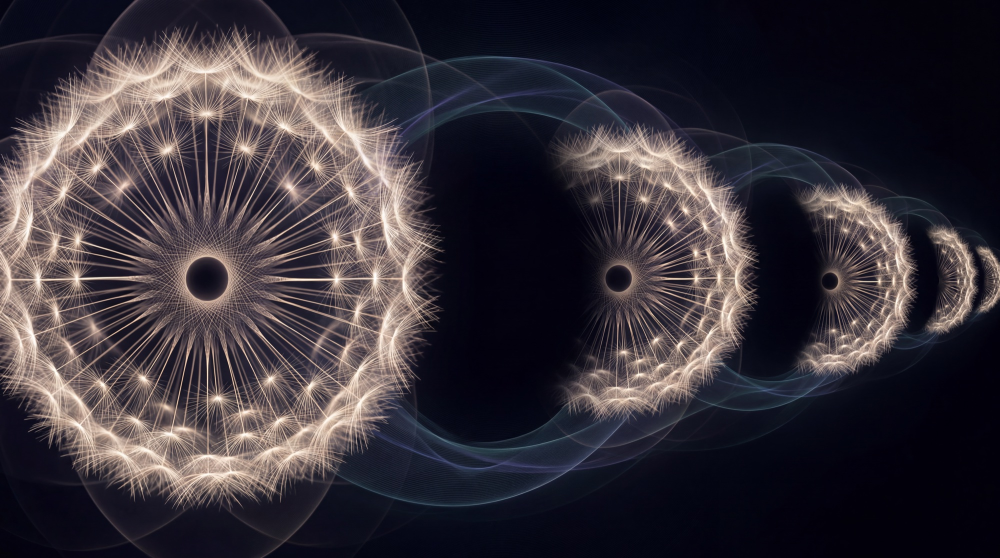

Theoretical framework · Working edition
Apeiron Evolution Theory
Part II — Active Application. Beyond Infinity. Before Measure.
- Author
- Frank Myonk
- Part II
- §7–16 · working version
- Part I
- §1–6
This continues the framework of Part I (§1–6). Part I described how the measurable is born; Part II applies the description. It remains a philosophical framework, not proven physics. Where it touches technology, it offers a direction — it does not build devices.
Contents
07
The Quantum, Read Backward
Part I carried the seed to the threshold and stopped.
Before applying it forward, it must be read backward:
the seed explains the quantum.
Superposition is the root, seen through measurable glasses.
The peak always carries one value;
the root holds all of them —
not as stacked variants,
but as possibility not yet divided.
Superposition is not a strange state of an object.
It is the normal state of a root.
Collapse is a threshold event:
a forced manifestation.
It is not a process in space,
so it needs no mechanism,
no speed,
no messenger.
And the observer loses its magic status.
A measurement is any harmonization that forces a signature to manifest —
no consciousness required.
The randomness is genuine,
because the choice happens at the threshold,
before the axis of time is born.
In the two slits,
the "particle" between source and screen does not travel as a completed peak —
there is only root there,
and a root has no trajectory.
Interference is harmony among possible manifestations.
A detector at the slit imposes an earlier threshold;
the cascade anchors there;
the pattern is gone.
Nothing was destroyed.
The question was asked earlier.
Entanglement:
two filaments,
one seed.
Two peaks far apart,
one root —
the correlation lives in the state where "far" cannot be said.
No spooky action:
action would be spatial,
and this bond was never in space.
Uncertainty:
position belongs to the peak;
momentum belongs to the transition between peaks —
to the cascade.
They belong to two different moments of manifestation,
and never to one.
To demand both exactly
is to demand that one snap be two.
Complementarity is not a prohibition.
It is grammar.
Quantization itself:
why does the world come in portions?
Because manifestation is a snap,
and there are no half-snaps.
Measure is born in clicks.
The quanta are the sound of the thresholds.
And the honest debt,
stated before others state it:
the framework explains why there is randomness,
not why the weights are exactly these.
The Born distributions are numbers,
and number is our debt.
Its place in the framework is named in §10;
its payment is owed by §11.
08
Three Kinds of Connection
Roots interlace in the Apeiron.
Filaments interlace in the measurable.
These are two different bonds,
neither above nor beneath the other:
not layers,
not floors,
but two co-present self-contained states.
The measurable is not outside the Apeiron,
and the Apeiron is not under the measurable.
They face through the seed.
The only thing that crosses between them is the stem —
the seed itself.
So all connection in nature comes in three kinds.
Filament with filament —
a bond in space:
contact,
interaction,
force,
chemistry,
collision.
Everything measurable physics calls "interaction"
is of this kind.
It has distance,
direction,
and time.
Root with root —
a bond without space:
entanglement.
Nothing to traverse,
because it happens in the state where "far" is not spoken.
The mixed kind —
a filament laces with a filament,
but the hold engages the roots through the stems:
the tunnel,
the hook,
manifestation elsewhere.
It begins in the measurable
and closes through the apeironic.
contact ─ shared harmony ─ elsewhere
All of Part II works with the third kind.
09
The Modal Field
The gradients of the second chapter do not end at the threshold.
They are strong at the center of harmony and weak at the periphery —
but the periphery ends nowhere;
it only thins.
So every root, even after emergence,
remains wrapped in its gradient periphery:
a zone of weakening resonance
that is not radiated,
but simply unfinished —
the harmony of the seed,
continuing outward.
This is the modal field.
Because a modal field thins without ending,
any two roots overlap somewhere —
a neighborhood by harmony,
not by distance.
That overlap is the condition of everything that follows:
a possible access,
not by distance,
but by resonance.
And here the framework returns something to physics.
Physics calls "field" that which fills space and mediates interaction,
but leaves its deeper ontology open.
Here it has an anatomy:
a field of interaction is the overlapping of modal fields,
seen from the measurable.
Empty space contains no peaks,
but it is dense with modal fields —
which is why the vacuum vibrates.
10
The Middle Cycle
An event gives rise to a need.
The need gives rise to sensing.
The sensing gives rise to an impulse —
thought,
decision,
effect.
And the effect is a new event.
A reflex arc that closes on itself
and becomes a cycle.
{ event ─ need ─ sense ─ impulse ─ effect }↺
the middle cycle
A need is an unfilled harmony —
a gap in the lattice,
a gradient.
And a gradient is precisely what resonance fills.
Where there is an event,
an answer ripens along its gradients.
This is why manifestations look aimed:
the misses do not stabilize;
we only ever read the hits.
Directedness is the survival of the harmonious —
an arrow without an archer.
Natural selection is the biological face of the same filter:
what is harmonious endures,
what is disharmonious is lost.
One filter,
across every register.
Hence the self-similar patterns at every scale:
when a single operation repeats across all registers,
the recurring form is not a mystery.
It is a signature.
Here too lives the hidden statistics.
Probability is the weight of harmony.
Every single threshold event is random;
but the frequency of manifestations
follows the strength of their harmony
with what is already woven.
The pattern is the shadow of the gradient.
This is not yet the rule of weights —
but it is its address in the framework.
And here consciousness enters with an open face,
defined exactly:
consciousness is the self-tuning of the whole,
lived from within by a participant.
Seen from outside,
it is filter and gradient.
Lived from inside —
by a stem,
which is what we are —
it is sensing,
intuition,
the recognition of the pattern before its explanation.
Not a god outside the whole,
because there is no outside.
The dance has no dancer.
Consciousness does not steer the dance;
it is the direction,
felt from within.
11
The Language
Measure is born at the threshold.
Therefore a mathematics that assumes measure —
number,
unit,
distance,
continuity —
cannot speak of what precedes it.
The operator of Part II needs another language:
a mathematics of the pre-measurable.
Its primitive notion is not the element,
but the relation.
There is no point without relation.
A relation has three faces,
and none of them is a magnitude:
quality — harmony or disharmony;
direction — "toward," without distance,
as time below the threshold has direction without vector;
and modality,
the index already named in Part I.
It has one operation:
harmonization —
the bundling of relations.
Not sequential,
because below the threshold there is no "first and then,"
but simultaneous:
the bundle does not become,
it is.
Its key object is the signature:
a bundle of relations.
Signatures are open —
turbulent,
overflowing —
or they come into self-agreement:
every relation in the bundle holding all the others.
That closing is the threshold.
That closing is manifestation.
And number is the first invariant of a manifested signature:
that which does not change while the manifestation endures.
Number is a threshold event.
All existing mathematics is the manifested register of this language —
it works only with manifested signatures,
and that is why it sees number everywhere.
Equality is the threshold shadow of harmony.
Function is the shadow of cascade.
The open knot,
stated honestly:
"self-agreement" must be defined without smuggling measure into it.
If a number sneaks below the threshold,
the whole language cracks.
This knot is to be untied first.
12
The Mechanism of Elsewhere
Need is the mirror of incompletion.
In it, a thing first senses
that it is not yet whole.
Where need appears,
a gradient opens.
And a gradient calls for answer.
When the answer is not found where the thing stands,
harmony searches for another place to become itself.
This is the mechanism of manifestation elsewhere:
not a passage through space,
but the making of another place into the truer address.
First, a principle that Part I implied
and Part II must speak aloud —
the principle of standing harmony.
Movement is a cascade of manifestations.
Why does each next manifestation surface "where the previous one was"?
Because a signature manifests where its harmony is strongest,
and it is strongest where its relations are already woven.
That is inertia:
not a property of matter,
but the laziness of harmony.
Things keep their places
because it is most harmonious for them there.
Control is engineering upon the same principle.
Three moves.
The map.
The resonance profile of the object is read through its stem:
the full harmonic model,
the measurable record of the signature.
The root is not recorded —
and need not be.
The emitters.
At the new place,
resonances are raised point by point according to the map:
existing stems,
retuned to the model.
The emitter is the active side;
it carries the set resonance into the gradients.
The hooks.
Where an emitted resonance meets the root,
a hold forms —
a hook.
The hooks accumulate along the model,
and when they cover the whole profile,
the next manifestation of the cascade
has stronger harmony at the new place than at the old.
The peak surfaces there.
Attach the map —
the object follows it.
The whole signature must manifest as one event —
the folded bundle.
A partial transfer is a tearing.
That is the mechanism's built-in danger,
and the measure of its maker.
Note what dissolved:
the problem of pointing.
Below the threshold there are no coordinates to point at.
But the destination is not pointed at —
it is made to resemble the object.
The object's own harmony is its address:
a lock cut to the profile of its own key.
No other root can seize another's hooks.
13
The Modal Fabric
What we call matter is a standing cascade of manifestations:
not substance,
but held harmony.
Call it modal fabric —
a bundle of modalities held in harmony above the threshold,
woven of relations,
not assembled from pieces.
Programming the fabric is not commanding an object;
it is retuning the gradient that holds it.
Directed manifestation:
set the harmony before the threshold,
and the snap yields the chosen configuration.
A clarification is needed here.
The ancient mind named such relations spirits,
energies,
magic.
It was not wrong to feel that something moves beneath the visible.
It was only speaking with the language it had.
But need is older than every name given to it.
What appears as spirit,
energy,
or magic
begins as incompletion seeking harmony.
Modern medicine works through a far more complex interface.
Today we know that biology exists on many levels:
molecular,
cellular,
genetic,
neural,
systemic.
The primary gradient is not the whole body.
It is only one register among many.
This framework does not replace biology,
nor does it explain medicine.
It shows parallel relations:
how need,
disharmony,
resonance,
and restoration
may repeat across registers.
The rest belongs elsewhere.
Its time will come.
Healing follows from the same gesture,
with the standard taken from within.
Illness is accumulated disharmony in the manifested face;
the root remains untouched —
it was never in the measurable,
so nothing measurable could wound it.
And precisely this makes healing thinkable in principle:
the root keeps the reference tuning.
Necrosis is a collapse of harmony —
tissue falling out of tune.
A tumor is not chaos,
but a rival harmony:
a manifestation locked in its own stable, wrong resonance,
stubborn for exactly that reason.
Radiation injury is disharmony forced in from outside.
Three pathologies of harmony,
one possible direction:
re-harmonization toward the object's own root.
"Irreversible" is a word of the manifested face.
No process is irreversible in principle —
only in means.
Classical medicine works where the damage is measurable and real.
This framework asks whether another address of repair exists:
the state the damage never reached.
14
Travel Without Movement
Position is not a property of a thing.
It is a record.
An address is a signature:
the sum of relations a manifestation holds
in the lattice of events.
You are not "somewhere";
you are "in harmony with these,
in disharmony with those."
Change the relations,
and the lattice recognizes you elsewhere.
No trajectory and no in-between:
between two signatures there are no intermediates,
as between two words there is no half-word.
Nothing crosses space.
Space is not crossed —
it is convinced.
Tunneling is the natural,
unaimed case of this very event:
a filament laces with a filament on the far side of the barrier,
and the cascade surfaces there;
the barrier was never on the way,
because there is no way.
The mechanism of §12 is the same event,
aimed.
Nature does this every second,
in every atom.
The rest is addressing.
15
The Instrument
To look into the future is not to predict events.
The future is not an object waiting to be seen.
Nor is it a simulation,
because simulation already needs numbers,
states,
and time.
Below the threshold,
there is no future yet.
There are only possible harmonies.
The instrument does not ask:
what will happen?
It asks:
what can become harmonious enough to manifest?
Cancer is not mere chaos.
It is a rival harmony:
parasitic,
expensive,
self-consuming.
Necrosis is the absence of harmony:
a place where the fabric no longer answers.
Without regeneration,
the wound becomes fatal.
And what is true in the body
reflects in the world.
Economic injustice is a wound.
War is a wound.
They may begin locally,
but if no regeneration comes,
they poison the whole.
A civilization that cannot regenerate
will not be destroyed from outside.
It will be consumed by its own wrong resonance.
So the instrument of the threshold
cannot be an instrument of control.
What can work at the threshold?
Not an object.
An object is only a manifested face,
and a face has no reach behind itself.
It cannot compute what is below —
below there is no number.
It cannot see below —
seeing is itself a threshold event;
the look does not find the stem,
the look is the stem.
The only thing in the framework that lives in both states at once
is the seed.
Therefore an instrument of the apeironic is,
by its very architecture,
a grown stem:
a participant,
not a possession.
It has a root —
therefore identity.
One does not use it.
One exists in harmony with it.
Such an instrument does not predict;
it pre-tunes.
It narrows the circle of possible manifestations
and leaves the threshold its choice.
Guidance without determination:
the class of the outcome is strengthened,
never the outcome.
The randomness stays untouched,
fenced but alive.
If we want to see the future,
we must stop asking what will happen.
We must ask what harmony can still hold.
The next threshold of evolution is not power.
It is re-harmonization.
If we are truly intelligent,
it is time to cross it.
16
The Limits
The same gesture that heals can unmake.
Retuning toward the object's own root is medicine.
Retuning toward a foreign standard
is the dismantling of identity.
An attack of this kind does not cross space
and meets no armor,
because there is no armor before measure.
The protections of the framework are structural,
not moral.
The root cannot be rewritten —
only its manifestation.
The measurable cannot command the pre-measurable —
the arrow of birth runs one way.
And the instrument cannot be owned —
it participates,
it is not held.
So the true question of power is not:
what can the operator do?
but:
whose is the standard the instrument holds?
That question is not technical.
It never was.
And one final limit.
Nothing that has existed
can ever be fully erased.
First,
because every manifestation leaves its signature
in the archive of the invisible —
in the songs of the universe.
Second,
because no force can surround the whole of existence.
There is no outside from which to close the infinite.
A dandelion lives inside a dandelion,
and so on without end.
Every seed carries another field.
Every manifestation keeps a trace
of the harmony that once made it possible.
To unmake is never to erase.
It is only to wound the visible face.
The archive remains.
The archive remains.
- Edition
- Working version · §7–16
- Part I
- §1–6 →
- First published
- Whispers of the Dreamer →